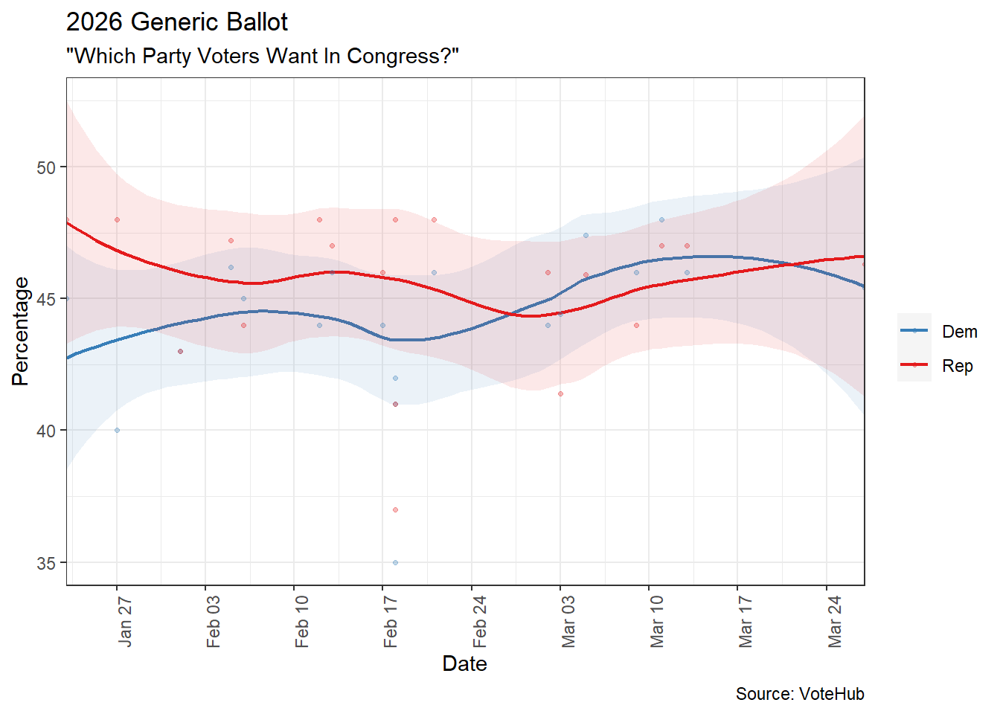
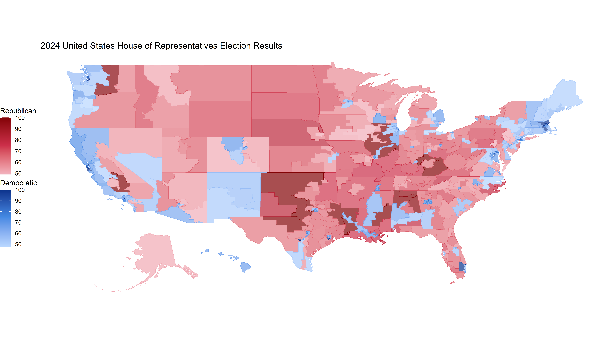
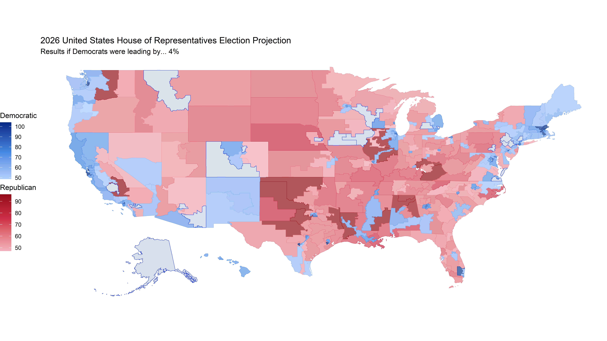
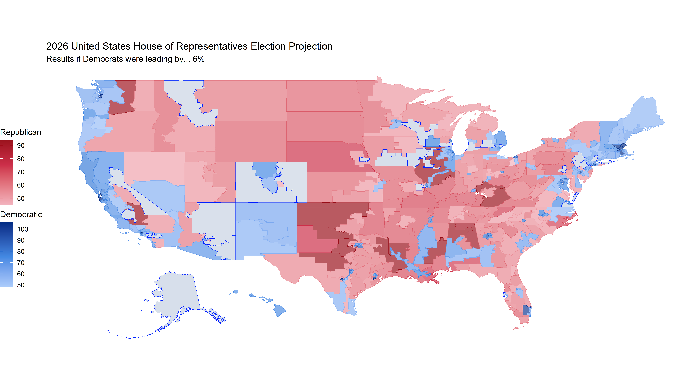

2026 United States Midterm Election Model
Projecting Outcomes Through Polls and Trends
Donald Trump
Congress
House of Representatives
All 435 House seats will be up for election, along with delegates for D.C. and four U.S. territories (excluding Puerto Rico). At least 11 Democrats hold seats Trump previously won, while 2–3 Republicans are in seats won by Harris.
2024 Results

Closest Seats
Below is a list of the closest races from the 2024 House of Representatives Election, defined as having been won by a margin of less than 10%. While not all of these seats will be competitive in the 2026 House of Representatives Election, it can give us insight into what seats may or may not be targeted.
Projection/Polling
Based On Generic Ballot + Trump Approval

Below is a list of the seats that flipped in this scenario. The percentages in the “Dem” and “Rep” columns represent the projected margin, while the 2024 Result and 2026 Projection columns are used to check the change in party.
2% Leftward Swing
Below is a list of the seats that flipped in this scenario. The percentages in the “Dem” and “Rep” columns represent the projected margin, while the 2024 Result and 2026 Projection columns are used to check the change in party.
4% Leftward Swing

Below is a list of the seats that flipped in this scenario. The percentages in the “Dem” and “Rep” columns represent the projected margin, while the 2024 Result and 2026 Projection columns are used to check the change in party.
6% Leftward Swing

Below is a list of the seats that flipped in this scenario. The percentages in the “Dem” and “Rep” columns represent the projected margin, while the 2024 Result and 2026 Projection columns are used to check the change in party.
United States Senate
33 of the 100 seats in the United States Senate will becontested. In additon to the 33 regularaly scheduled senatorial elections, there will be two special elections held in Ohio and Florida due to Vice President J.D Vance vacacting his previously held Senate seat to become Vice President and Marco Rubio vacating his Senate seat to become Secretary of State.

Closest Seats
Below is a list of the closest races from the 2020 Senate Election, defined as having been won by a margin of less than 10%. While not all of these seats will be competitive in the 2026 Senate Elections, it can give us insight into what seats may or may not be targeted.
The list also includes Alaska and New Hampshire despite having been won by over 10% in 2020. This will further be exlained below the table.
While New Hampshire has voted Democratic presidentially since 2004, it is far from a “safe blue” state. Republicans have control of the governorship, the state House of Representatives, and the state Senate. Furthermore, the former governor, Chris Sununu has considered running. In 2020 he won re-election by 31.76% after having previously been re-elected in 2018 by 7.04%, and being first elected in 2016 by 2.27%, while just recently in 2022 by 15.51%. With this electoral history in mind, this can potentially make the race competitive.
As for Alaska, the race could also become potentially competitive should Mary Peltola run for this seat. Mary Peltola previously served as the Representative for the at-large district of Alaska. She was first elected in August 2022 by a margin of 2.96% in a special election after the death of Don Young. She later won re-election the same year in November by a margin of 9.92. However she later lost re-election in 2024 by 2.44%, despite the fact that Donald Trump won the state by 13.1%. Like with Chris Sununu, this strong electoral history could make the race competitive.